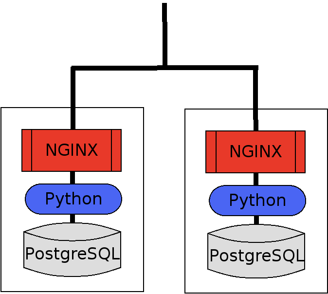
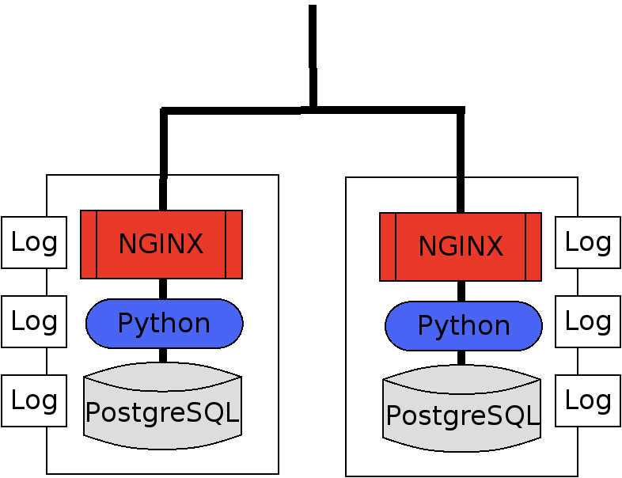
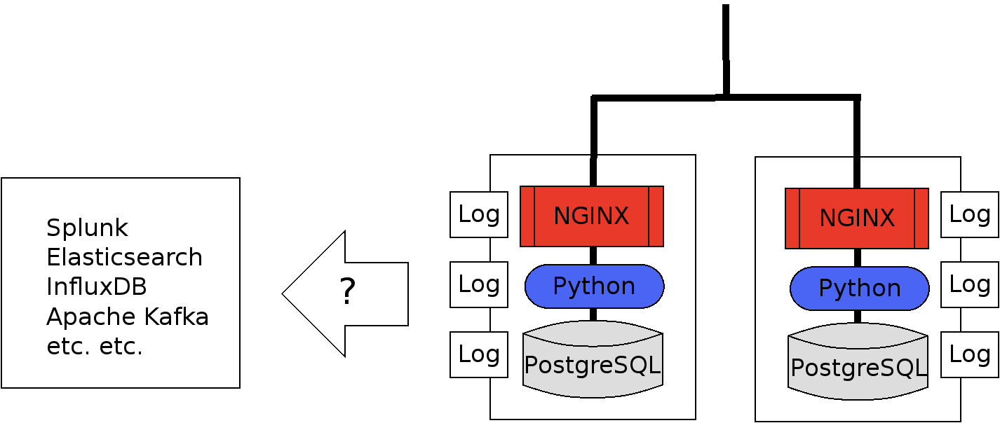
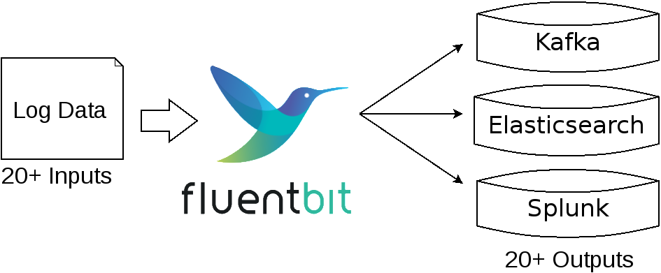
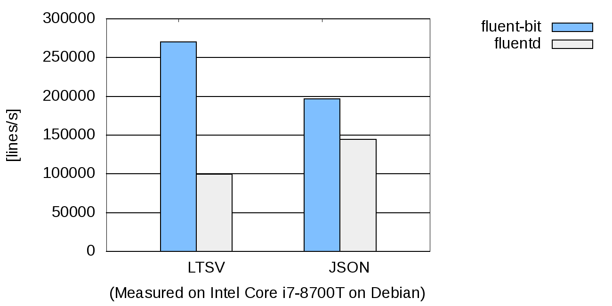
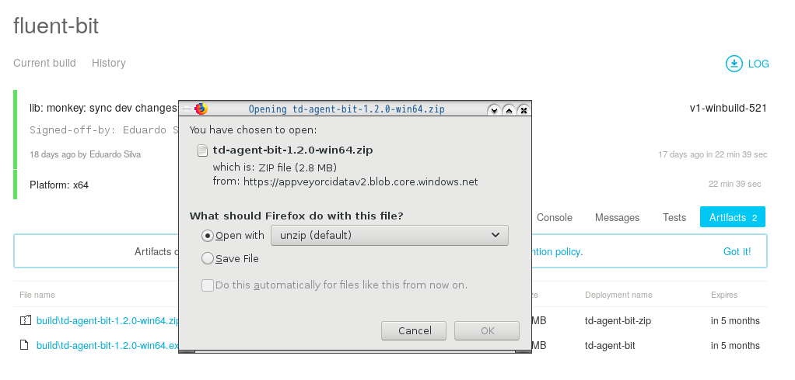
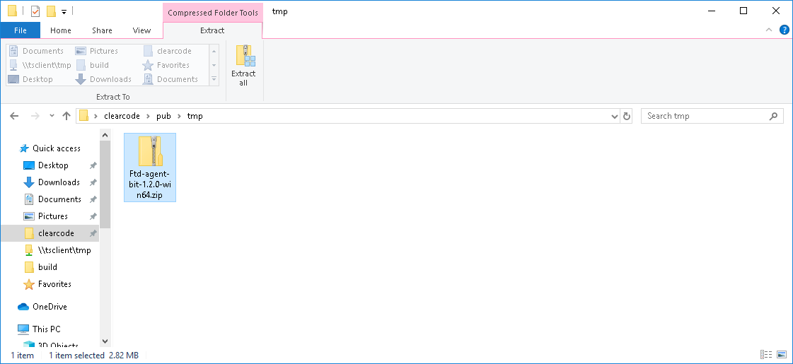

The State of Windows Support in Fluent Bit
Fujimoto Seiji
Clear Code Inc.
2019.07.17
Fluentd Meetup
- I'm an engineer from clear code inc,
- ... and right now working on the project to port Fluent Bit to Windows.
- Today I want to provide a general introduction of Fluent Bit
- ... and talk about the state of Windows support I'm working on.
Talk Agenda
- Higher overview of Fluent Bit
- The state of Windows support
- The future of development
- Here is my agenda.
- Today I want to first provide an overview of Fluent Bit,
- ... What problem it tries to solve,
- ... and why you need to care about it.
- ... for those who are not well familiar with Fluent Bit.
- Then I'll talk about the current state of Windows Support.
- ... and want to talk about the development plan in future.
- So let's start.
Higher Overview
"Log Management Problem"
- Let me start by saying that we have tons and tons of log data to manage,
- We have logs from web servers,
- ... logs from database servers,
- ... logs from proxy servers,
- ... and so on.
- And the amount of logs is increasing very rapidly each year.
Traditional Web application Stack

- This is a traditional web application,
- ... which has two Nginx servers
- ... two Python app servers
- ... and two PostgreSQL servers,
- My question is "how many log files this stack has?"
- (5sec PAUSE)
- Let me count them up.
- ... First we have two access log from Nginx of course,
- ... and we have additional two logs from Python,
- ... and two logs from PostgreSQL.
Traditional Web application Stack

- So we have at least 6 logs,
- All of which we need to monitor carefully,
- ... or we'll miss a serious incident.
- ... like exception happens, connection limit exceeded, replication fails and others
- (5sec PAUSE)
- It's already not a quite trivial to monitor them properly, but things get better.
Age of Micro Services
- Now it's age of micro services and virtualisation.
- Now you can literally have a dozens of severs just to run a single application,
- and every server emits log files independently with each other.
- In this slide now you have six micro applications,
- ... so you end up having 36 logs to monitor,
- ... because you have six applications and each emits six logs.
- ... so six times six is 36.
- How do you monitor them properly?
Rise of Log Management Solutions
- Splunk
- Elasticsearch + Kibana
- InfluxDB
- Apache Kafka
- etc. etc.
- It's no wonder that everyone suddenly rushes to log management solutions,
- ... like Splunk, Elasticsearch,
- ... and time series database like InfluxDB
- ... and message queue like Kafka.
- I'm sure that you are using one or two of them at work,
- ... and I for one use them at work.
- They are indeed amazing products.
Remaining Problems

- But the remaining problem here is that how to send your logs to these products.
- These log files do not transfer themselves to other servers,
- ... so you need to make it happen.
- The question is "how".
Summary (so far)
- You have a large amount of log data.
- You have amazing log management solutions.
- What's missing is a pipeline to connect them.
- I summarize my points so far,
- ... You have a large amount of log data at one hand,
- ... You have amazing log management solutions at another hand.
- ... What is missing is a pipeline to connect them.
Solution
Fluent Bit Overview
- We develop Fluent Bit to solve this problem.
- Fluent Bit is a program that can talk a number of protocols
- and let you transfer data to your favorite log management solutions very easily.
Use Fluent Bit to connect services

- This picture illustrates how Fluent Bit works.
- For example, it can speak Kafka protocol,
- ... so you can use fluent-bit to stream your logs into Kafka clusters.
- Also it can speak Elasticsearch protocol,
- ... so you can ship your logs file into Elasticsearch server very easily.
- It supports more than twenty types of outputs, and more than
twenty types of inputs.
- ... So it's pretty much capable.
What is the difference with Fluentd?
- At this point, you may wonder
- ... "Isn't that what Fluentd exactly does?
- ... what is the difference between Fluentd and Fluent Bit?"
- (PAUSE)
- The keyword is "efficiency".
- As you may know, Fluentd is written in Ruby.
- It's great and very convenient language but quite slower to run than compiled languages.
- Since Fluent Bit is written in c, it can process a lot more data efficiently than Fluentd.
Processed Lines Per Second (the higher the better)

- This table illustrates the difference between them.
- ... Blue is fluent-bit, gray is Fluentd and Y axis is the lines processed per second, so the higher the better.
- For LTSV, fluent bit can process 2 times more data per second..
- ... so pretty much faster than Fluentd.
- Even For JSON, which Fluentd has a quite optimized parser for,
- ... but still Fluent Bit outperforms Fluentd by twenty or thirty percent.
Summary (so far)
- Fluent Bit is a log shipper.
- It can transfer your logs to a number of services.
- It's very efficient thanks to C.
So the summary so far is
- Fluent Bit is a very convenient log shipper.
- It can transfer your logs to a number of services like Splunk Elasticsearch, Kafka.
- It's very efficient thanks to C.
State of Windows Support
"Evolving of Fluent Bit"
- So this is the main part.
- (PAUSE)
- First I'd like to talk a bit about the history of Fluent Bit.
- I'd like to start by telling that Fluent Bit was initially developed only for Linux,
- ...indeed only for embedded Linux at first.
Five years ago (2014)
"Fluent Bit is a collection tool designed for Embedded Linux that collects Kernel messages and Hardware metrics"
... From README.md at b327996bfc
- Five years ago, in the initial commit of Fluent Bit,
- ... the readme said "Fluent Bit is a collection tool designed for Embedded Linux that collects Kernel messages and Hardware metrics".
- So that was the start.
- ... It was meant to be for Embedded Linux.
Evolving of Fluent Bit
- 2015 "Fluent Bit is an events collector for Linux, Embedded Linux, OSX and BSD"
- 2017 "Native aarch64 support has been merged."
- 2019 "Starting from this version we are supporting builds on Windows environments"
- Since then, we got full Linux support, OSX support and BSD support in twenty-fifteen.
- We have also expand the supported architecture.
- ... Notably we have now full support for arm 64 since two years ago in twenty-seventeen.
- (PAUSE)
- And this year we've gotten Fluent Bit to run on Windows.
State of Windows support
- Windows Project Start = 2018/12
- Done porting most of the core engine.
- 1/3 of plugins are working.
- Early stage, but it's already usable.
- So what is the current status of Windows support?
- The porting project started the last December.
- ... so roughly we have six month's work.
- It actually came along very smoothly.
- ... We've done porting most of core engine,
- ... and around third of plugins are working.
- It's still quite an early stage,
- ... but the windows port is usable already.
The achievements so far
- Enable to compile Fluent Bit on Microsoft Visual C++.
- Can launch Fluent Bit on PowerShell (or cmd.exe)
- Done porting 20 plugins
- Installers are also available (EXE and ZIP)
- More specifically, the works we've done are,
- ... enable to compile Fluent Bit on Microsoft Visual C.
- ... Now we can launch Fluent Bit from shell like PowerShell.
- ... Done porting 20 plugins to Windows.
- Installers are also available (in two flavours: EXE and ZIP)
- ... so installation is pretty much trivial.
Step-by-step Tutorial
"How you can use Fluent Bit"
- So I want to explain how you can use Fluent Bit from today.
- (PAUSE)
- This is very easy indeed,
- ... so I'd like to show how to do that in a step by step manner.
- Let me first set up some context.
- Suppose you have some application running on Windows
- ... and the application outputs its logs to c-log-app.log
- And you have Kafka cluster as a central message bus.
- The task is transfer the log file from Windows to Kafka.
- (PAUSE)
- Using Fluent Bit, we can set up such a pipeline just in
three steps.
Tutorial
- Download a ZIP installer for Windows.

- First, download the ZIP installer.
- We have EXE and ZIP installers as I said,
- ... and ZIP is easier for quick testing.
- We build installers for each commit on AppVeyor,
- ... so you can download from there if you want the latest one.
- Open the link on your browser and just click and save it.
Tutorial
- Unzip the ZIP archive

- Next, expand the ZIP file.
- You need to just click the ZIP archive and select "Expand All" on Explorer
- ... or you can use the 'Expand-Archive' commandlet on PowerShell.
- Both work fine, so choose the one you like.
Tutorial
- Launch Fluent Bit from PowerShell
PS> bin\fluent-bit.exe -i tail
-p path=C:\logs\app.log
-o kafka
-p brokers=192.168.100.1
-p topics=windows
- Then open PowerShell and just launch fluent-bit.
- The ZIP file contains fluent.bit.exe which is a stand-alone binary.
- As you see, it is included in the bin directory
Tutorial
- Launch Fluent Bit from PowerShell
PS> bin\fluent-bit.exe -i tail
-p path=C:\logs\app.log
-o kafka
-p brokers=192.168.100.1
-p topics=windows
- As I said, the target log file is stored in C-logs-app.log,
- So we use tail plugin as an input,
- ... set the path accordingly
- ... so that fluent-bit can read from the log file.
Tutorial
- Launch Fluent Bit from PowerShell
PS> bin\fluent-bit.exe -i tail
-p path=C:\logs\app.log
-o kafka
-p brokers=192.168.100.1
-p topics=windows
- And we assumed that the output is Kafka.
- So we use the Kafka output plugin,
- ... and set broker's IP address,
- ... and tell fluent-bit to send the data with "windows" topic
- That's it! You'll see log data running to your Kafka server.
Summary: How to run Fluent Bit
- Download the ZIP archive
- Unzip it
- Run the fluent-bit
- The summary is that
- ... Download the ZIP archive
- ... Unzip it
- ... and run the executable
- This is all that you need.
- ... So please try at home if you have some interest in Fluent Bit
The Future
- So this is status of our efforts to make Fluent Bit Windows-compatible log shipping solution.
- I'd like to finish my talk with sharing some ideas of future development.
Some Ideas
- Expand Plugin Support
- Windows Event Log Plugin (ongoing)
- More document & guides
- First I'm planning to port the remaining 32 plugins to Windows as much as possible.
- And as to the plugin, we are right now working on a plugin for Windows Event Log
- ... which should be useful for Windows administrators.
- And I'm planning to add more documents, since it's kinda sparse right now.
We need feedbacks from users!
- And we need feedbacks from users!
- What is your use case?
- Which service do you want to connect to?
- If you have idea please tell us on the issue tracker.
- ... I'd like to hear from real-life users.
- Thank You.